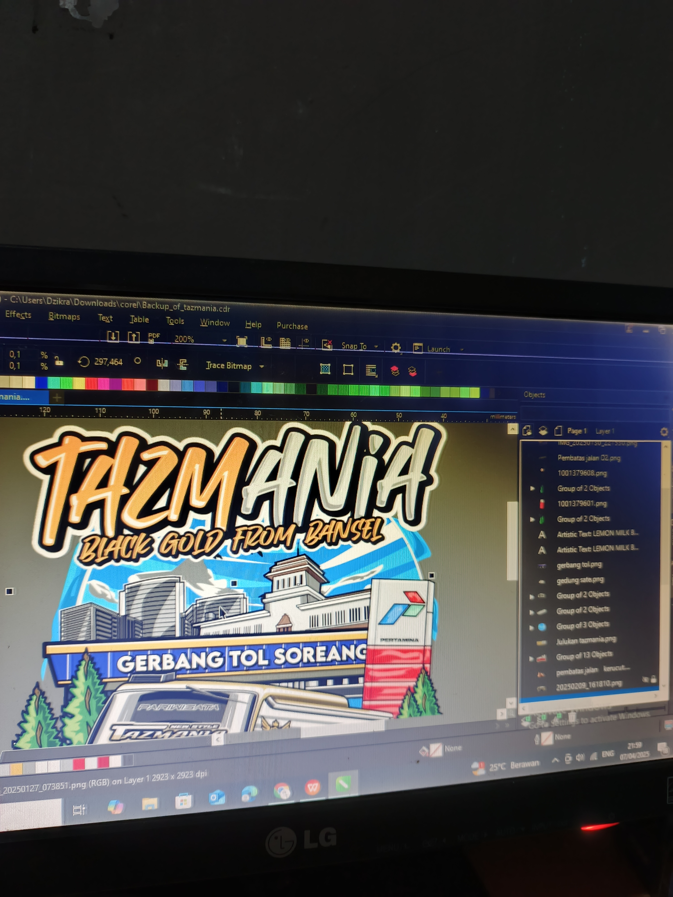
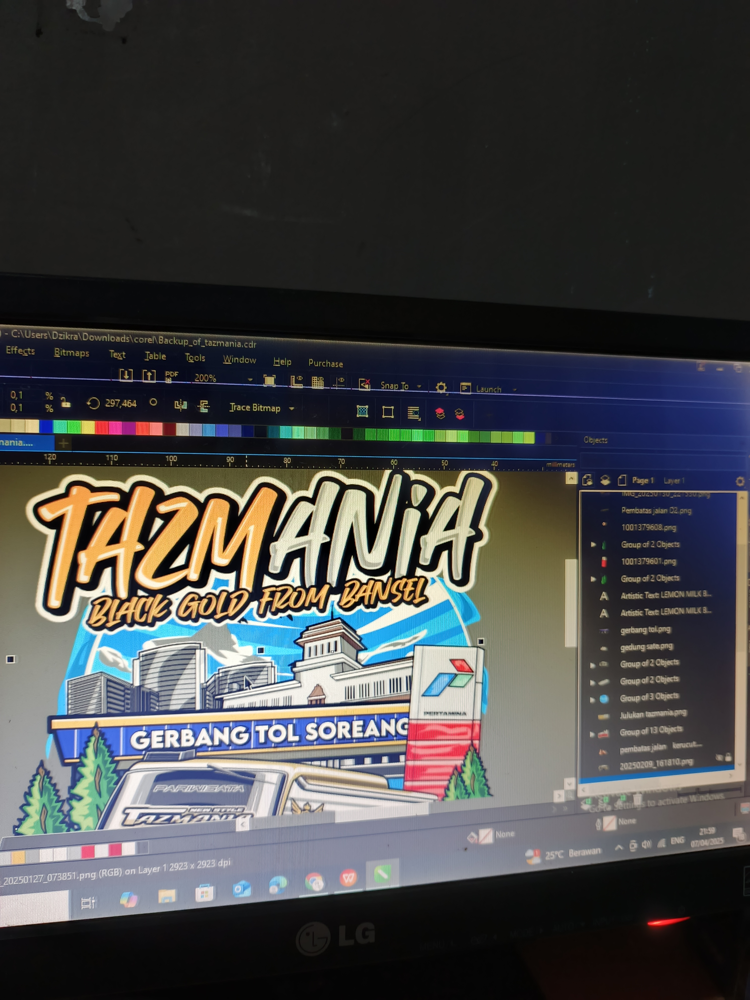
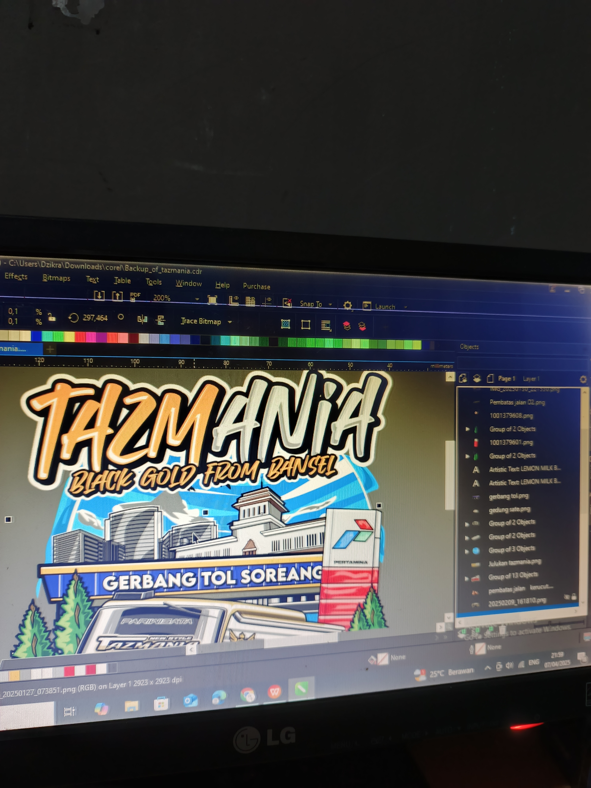

Gallery
Ini adalah beberapa hasil foto tentang saya:
 

Student | Middle School | Runner
Dikulum dikunyah, Assalamualaikum Semuanya! Perkenalkan saya adalah siswa kelas 9-A di SMP Negeri 1 Kutawaringin angkatan tahun 2022 - 2025
Saya mempunyai kesukaan terhadap alam, apalagi keindahan alam diatas puncak gunung,atau bermain ke curug, yang berarti saya cukup menyukai mendaki atau eksplore alam. Tak hanya di alam atau mengenai pendakian saja, saya menyukai olahraga lari walau hanya sekedar Easyrun untuk menghabiskan waktu saja,Juga saya cukup menyukai untuk membuat desain,editing video, programming atau hal hal yang mengenai komputer baik software maupun hardware
Tak hanya dalam bidang olahraga dan dunia komputer saja,saya juga cukup menyukai belajar beberapa hal-hal baru,seperti mendengarkan Podcast,Strumming Gitar,Membaca Novel,atau membaca buku-buku mengenai Habits.
Saya awal menjalani pendidikan di RA Daar At-Taubah yang berada di Kec.Andir,Kota Bandung.Kemudian hanya berselang beberapa bulan saya pindah ke TK Asmaul Husna.
Setelah itu saya masuk Sekolah Dasar di sekolah SDN 182 Perumnas Cijerah,Kec.Bandung Kulon, Kota Bandung. Saya berada di sekolah ini hanya sampai di kelas 3 yang kemudian karena faktor jarak rumah yang jauh mengharuskan saya pindah ke SDN 273 Gempol Sari (Kec.Bandung Kulon)hingga kelulusan Sekolah Dasar
Ini adalah beberapa hasil foto tentang saya:

Yuk temenan: